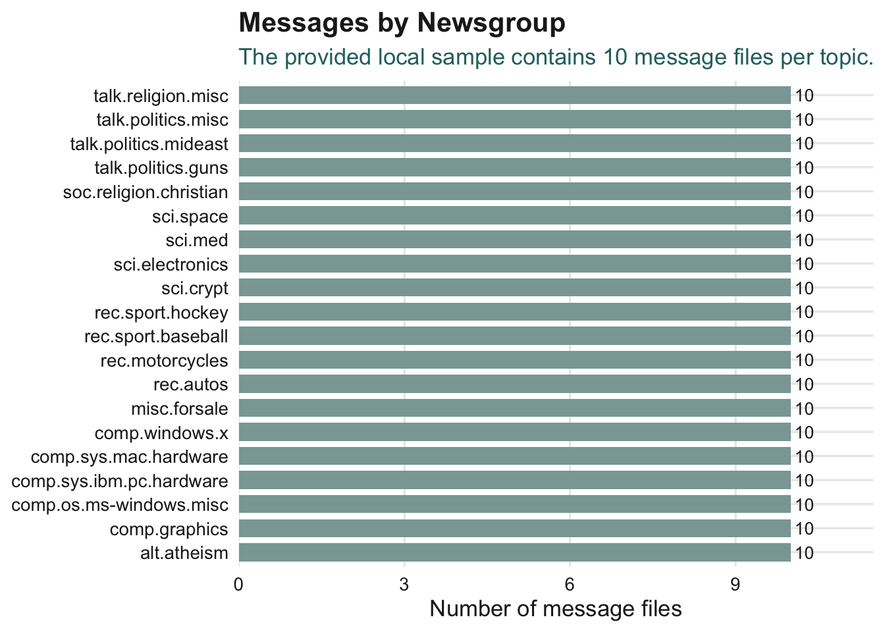
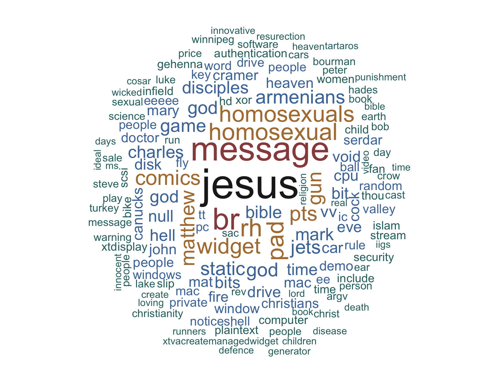
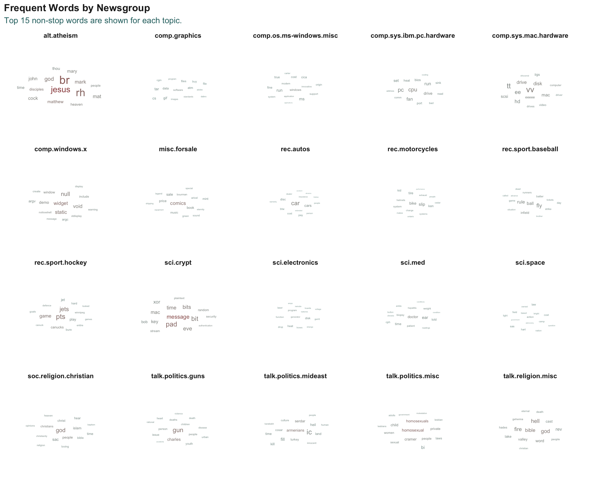
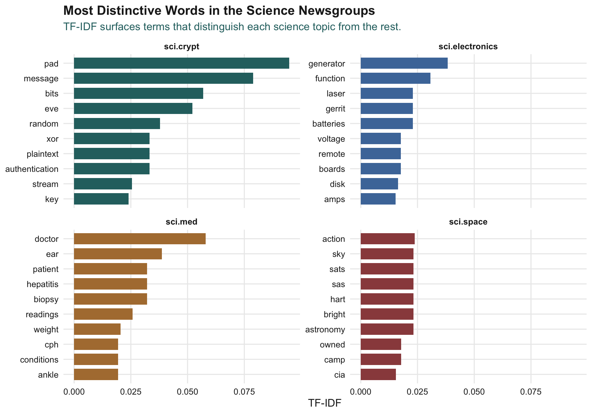
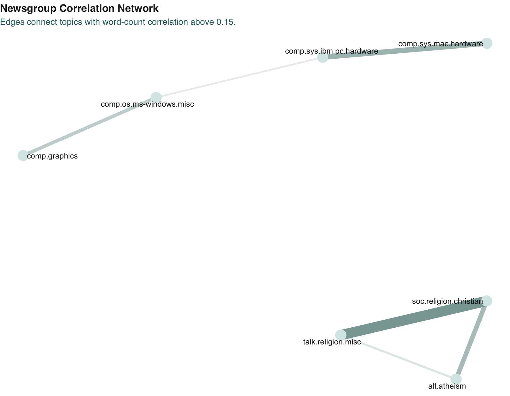
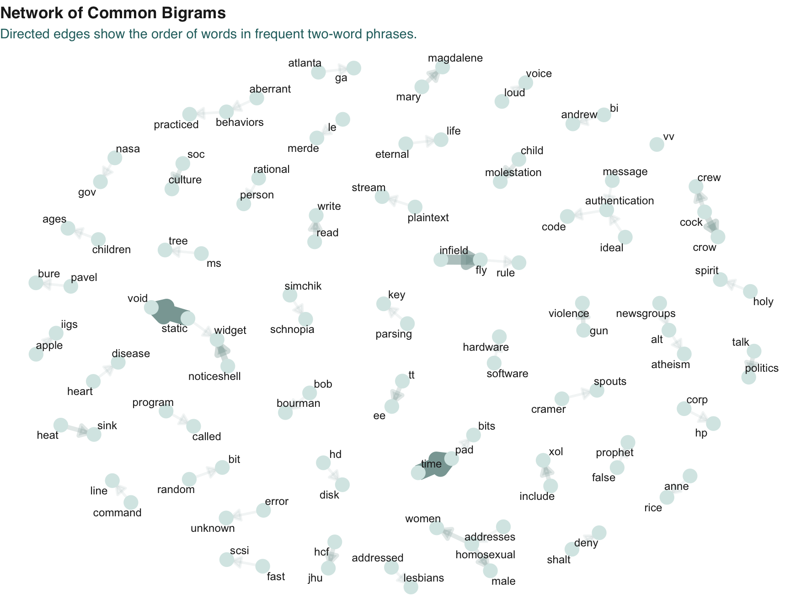
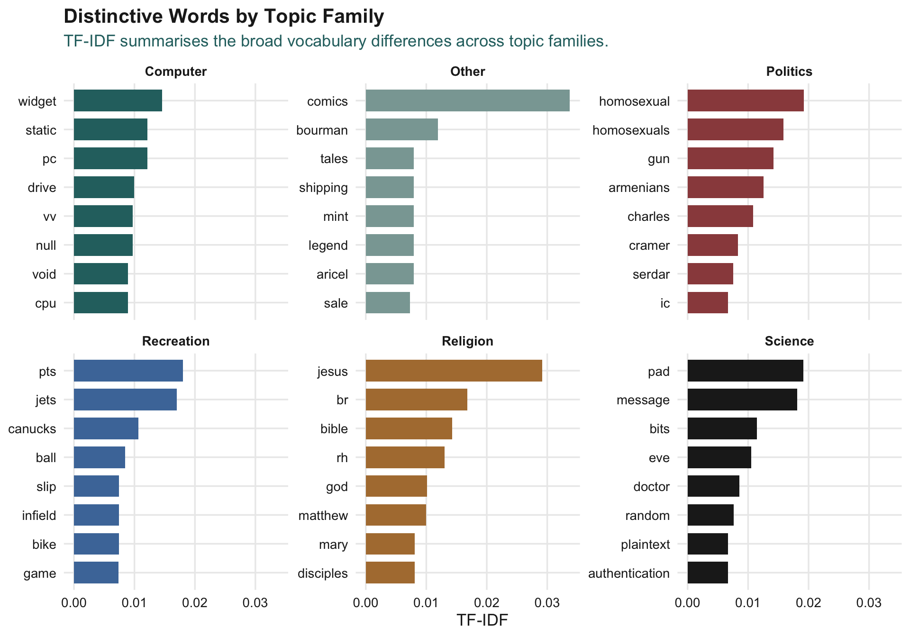

tribble(
~Package, ~Purpose,
"tidyverse", "Data wrangling, plotting, string handling, and file import.",
"tidytext", "Tokenising text and calculating text statistics such as TF-IDF.",
"widyr", "Pairwise correlations between newsgroups based on shared words.",
"wordcloud", "Base R word cloud visualisation.",
"ggwordcloud", "ggplot2-friendly word cloud visualisation.",
"DT", "Interactive tables.",
"igraph", "Network object creation.",
"tidygraph", "Tidy graph structures.",
"ggraph", "Network graph visualisation.",
"scales", "Axis and label formatting.",
"knitr", "Neater tables in the rendered report."
) |>
datatable(
rownames = FALSE,
options = list(pageLength = 10, dom = "tip")
)Hands-on Exercise 7b - Visualising and Analysing Text Data with R
1 Overview
This hands-on exercise follows the workflow in Chapter 29 of R4VA, Visualising and Analysing Text Data with R: tidytext methods. The exercise uses the 20news text collection to practise importing many text files, cleaning Usenet-style messages, tokenising text, computing word statistics, visualising TF-IDF, and building simple text networks.
The main tasks are:
- import multiple text files from multiple topic folders;
- clean message headers, signatures, and nested quoted replies;
- transform unstructured text into tidy tokens;
- visualise frequent words using word clouds;
- identify topic-specific terms using TF-IDF;
- compare newsgroups using word-count correlations; and
- visualise common bigrams as a directed network.
2 Getting Started
2.1 Installing and Loading the Packages
The packages used in this exercise are loaded in the setup chunk.
3 Importing Multiple Text Files from Multiple Folders
The 20news folder contains one subfolder per newsgroup. Each subfolder contains individual message files.
news20 <- find_data_dir()
newsgroup_folders <- tibble(
folder = dir(news20, full.names = TRUE)
) |>
filter(dir.exists(folder)) |>
mutate(newsgroup = basename(folder))
newsgroup_folders |>
count(newsgroup, name = "folder_count") |>
datatable(
rownames = FALSE,
options = list(pageLength = 10, dom = "tip")
)3.1 Reading One Folder
The helper function below reads every message file inside one folder. Each line of each message becomes one row.
read_folder <- function(infolder) {
tibble(file = dir(infolder, full.names = TRUE)) |>
filter(!dir.exists(file)) |>
mutate(
text = map(
file,
read_lines,
locale = locale(encoding = "UTF-8"),
progress = FALSE
)
) |>
transmute(
id = basename(file),
text
) |>
unnest(text)
}3.2 Reading All Messages
The function is then mapped across all newsgroup folders.
raw_text <- tibble(folder = dir(news20, full.names = TRUE)) |>
filter(dir.exists(folder)) |>
mutate(folder_out = map(folder, read_folder)) |>
unnest(cols = c(folder_out)) |>
transmute(
newsgroup = basename(folder),
id,
text
)
raw_text |>
slice_head(n = 10) |>
datatable(
rownames = FALSE,
options = list(pageLength = 10, scrollX = TRUE, dom = "tip")
)4 Initial Exploratory Data Analysis
There are 20 newsgroups in the local dataset. Each newsgroup contributes 10 message files.

message_counts <- raw_text |>
group_by(newsgroup) |>
summarise(messages = n_distinct(id), .groups = "drop")
ggplot(message_counts, aes(messages, reorder(newsgroup, messages))) +
geom_col(fill = my_soft_teal, width = 0.75) +
labs(
title = "Messages by Newsgroup",
x = "Number of message files",
y = NULL
) +
theme_yyraw_summary <- tibble(
measure = c(
"Newsgroups",
"Message files",
"Text lines before cleaning"
),
value = c(
n_distinct(raw_text$newsgroup),
n_distinct(paste(raw_text$newsgroup, raw_text$id)),
nrow(raw_text)
)
)
kable(raw_summary)| measure | value |
|---|---|
| Newsgroups | 20 |
| Message files | 200 |
| Text lines before cleaning | 7601 |
5 Introducing tidytext
The tidytext framework treats text as data in a tidy table: one token per row. Before tokenising, the raw Usenet messages need to be cleaned so that headers, signatures, and quoted reply text do not dominate the analysis.
5.1 Removing Headers, Signatures, and Nested Text
cleaned_text <- raw_text |>
group_by(newsgroup, id) |>
filter(
cumsum(text == "") > 0,
cumsum(str_detect(text, "^--")) == 0
) |>
ungroup() |>
filter(
str_detect(text, "^[^>]+[A-Za-z0-9]") | text == "",
!str_detect(text, "writes(:|[.][.][.])$"),
!str_detect(text, "^In article <")
)
tibble(
stage = c("Before cleaning", "After cleaning"),
lines = c(nrow(raw_text), nrow(cleaned_text))
) |>
kable()| stage | lines |
|---|---|
| Before cleaning | 7601 |
| After cleaning | 4449 |
5.2 Tokenising the Text
The cleaned lines are tokenised into words. Stop words and non-alphabetic tokens are removed.
usenet_words <- cleaned_text |>
unnest_tokens(word, text) |>
filter(
str_detect(word, "^[a-z]+$"),
!word %in% stop_words$word
)
words_by_newsgroup <- usenet_words |>
count(newsgroup, word, sort = TRUE) |>
ungroup()
words_by_newsgroup |>
slice_head(n = 15) |>
datatable(
rownames = FALSE,
options = list(pageLength = 10, dom = "tip")
)5.3 Word Cloud

set.seed(1234)
wordcloud(
words = words_by_newsgroup$word,
freq = words_by_newsgroup$n,
max.words = 150,
random.order = FALSE
)5.4 Word Clouds by Newsgroup
The faceted word cloud below uses the top words from each newsgroup so that all 20 topics remain readable.

top_words_for_cloud <- words_by_newsgroup |>
group_by(newsgroup) |>
slice_max(n, n = 15, with_ties = FALSE) |>
ungroup()
set.seed(1234)
ggplot(top_words_for_cloud, aes(label = word, size = n, colour = n)) +
geom_text_wordcloud_area(rm_outside = TRUE) +
facet_wrap(~newsgroup, scales = "free") +
scale_size_area(max_size = 8) +
theme_minimal()6 Term Frequency-Inverse Document Frequency
TF-IDF highlights words that are common in one newsgroup but uncommon across the rest of the dataset.
tf_idf <- words_by_newsgroup |>
bind_tf_idf(word, newsgroup, n) |>
arrange(desc(tf_idf))
tf_idf |>
slice_head(n = 100) |>
datatable(
rownames = FALSE,
filter = "top",
options = list(pageLength = 10, scrollX = TRUE)
) |>
formatRound(columns = c("tf", "idf", "tf_idf"), digits = 4)6.1 TF-IDF in the Science Newsgroups

sci_tf_idf <- tf_idf |>
filter(str_detect(newsgroup, "^sci[.]")) |>
group_by(newsgroup) |>
slice_max(tf_idf, n = 10, with_ties = FALSE) |>
ungroup() |>
mutate(word = reorder_within(word, tf_idf, newsgroup))
ggplot(sci_tf_idf, aes(tf_idf, word, fill = newsgroup)) +
geom_col(show.legend = FALSE) +
facet_wrap(~newsgroup, scales = "free_y") +
scale_y_reordered() +
labs(x = "TF-IDF", y = NULL) +
theme_yy7 Pairwise Newsgroup Correlations
The widyr::pairwise_cor() function can compare newsgroups based on the words they use. Positive correlations suggest that two topics share similar vocabulary.
newsgroup_cors <- words_by_newsgroup |>
group_by(word) |>
filter(sum(n) >= 3) |>
ungroup() |>
pairwise_cor(newsgroup, word, n, sort = TRUE)
newsgroup_cors |>
slice_head(n = 20) |>
datatable(
rownames = FALSE,
options = list(pageLength = 10, dom = "tip")
) |>
formatRound(columns = "correlation", digits = 3)7.1 Correlation Network

correlation_graph <- newsgroup_cors |>
filter(correlation > 0.15) |>
graph_from_data_frame(directed = FALSE)
set.seed(2017)
ggraph(correlation_graph, layout = "fr") +
geom_edge_link(aes(edge_alpha = correlation, edge_width = correlation)) +
geom_node_point(size = 6) +
geom_node_text(aes(label = name), repel = TRUE) +
theme_void()8 Bigram Analysis
Bigrams are two-word sequences. They are useful because some meaning is lost when words are analysed one at a time.
8.1 Creating and Counting Bigrams
bigrams <- cleaned_text |>
unnest_tokens(bigram, text, token = "ngrams", n = 2)
bigrams_count <- bigrams |>
filter(!is.na(bigram)) |>
count(bigram, sort = TRUE)
bigrams_count |>
slice_head(n = 15) |>
datatable(
rownames = FALSE,
options = list(pageLength = 10, dom = "tip")
)8.2 Cleaning Bigrams
The raw bigram counts are dominated by stop-word combinations such as “of the”. The two-word strings are separated so each word can be filtered.
bigrams_filtered <- bigrams |>
filter(!is.na(bigram)) |>
separate(bigram, c("word1", "word2"), sep = " ") |>
filter(
!word1 %in% stop_words$word,
!word2 %in% stop_words$word,
str_detect(word1, "^[a-z]+$"),
str_detect(word2, "^[a-z]+$")
)
bigram_counts <- bigrams_filtered |>
count(word1, word2, sort = TRUE)
bigram_counts |>
slice_head(n = 15) |>
datatable(
rownames = FALSE,
options = list(pageLength = 10, dom = "tip")
)8.3 Bigram Network

bigram_graph <- bigram_counts |>
filter(n >= 2) |>
slice_max(n, n = 60, with_ties = FALSE) |>
graph_from_data_frame()
set.seed(1234)
arrow_style <- grid::arrow(type = "closed", length = unit(0.12, "inches"))
ggraph(bigram_graph, layout = "fr") +
geom_edge_link(
aes(edge_alpha = n, edge_width = n),
arrow = arrow_style,
end_cap = circle(0.06, "inches"),
show.legend = FALSE
) +
geom_node_point(size = 5) +
geom_node_text(aes(label = name), repel = TRUE) +
theme_void()9 Additional Analysis: Topic Families
The original 20 newsgroups can be grouped into broader families such as computer, recreation, science, politics, and religion. This gives a compact view of the vocabulary that distinguishes higher-level topic families.
family_words <- usenet_words |>
mutate(
topic_family = case_when(
str_starts(newsgroup, "comp.") ~ "Computer",
str_starts(newsgroup, "rec.") ~ "Recreation",
str_starts(newsgroup, "sci.") ~ "Science",
str_starts(newsgroup, "talk.politics") ~ "Politics",
str_detect(newsgroup, "religion|atheism") ~ "Religion",
TRUE ~ "Other"
)
) |>
count(topic_family, word, sort = TRUE) |>
bind_tf_idf(word, topic_family, n)
top_family_words <- family_words |>
group_by(topic_family) |>
slice_max(tf_idf, n = 8, with_ties = FALSE) |>
ungroup() |>
mutate(word = reorder_within(word, tf_idf, topic_family))
ggplot(top_family_words, aes(tf_idf, word, fill = topic_family)) +
geom_col(show.legend = FALSE) +
facet_wrap(~topic_family, scales = "free_y") +
scale_y_reordered() +
labs(x = "TF-IDF", y = NULL) +
theme_yy10 Key Takeaways
Tip
The tidytext workflow turns unstructured message files into tidy rows of tokens. Once the text is tidy, familiar tidyverse methods can be used for counting, filtering, grouping, visualising, and modelling the relationships among terms and topics.
From this exercise:
- word counts show the most common terms after cleaning;
- TF-IDF reveals terms that are distinctive to specific newsgroups;
- pairwise correlations identify topics with similar vocabulary; and
- bigram networks preserve some phrase structure that single-word analysis removes.